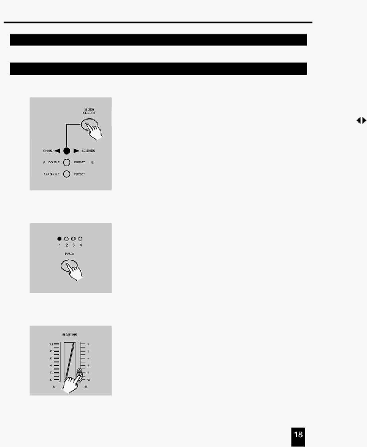

2. Опис інструкцій
2.3 Виконання
2.3.1 Виконання послідовності Програм
1. Натисніть кнопку Mode Select для вибору режиму CHNS
SCENE при цьому засвітиться індикатор червоних
кольорів.
2. Натисніть кнопку Page для вибору сторінки, на якій розміщена
Програма, що Ви бажаєте виконати.
3. Установіть повзунок Master B у максимальне значення
(крайнє нижнє).